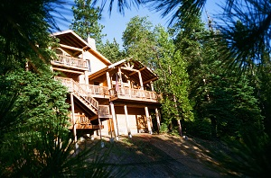
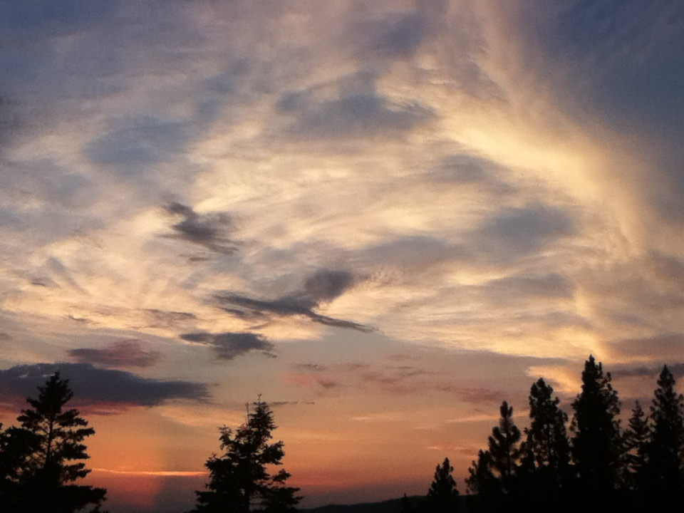
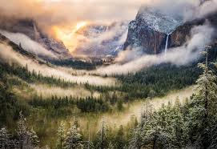

Great Location!
Located inside the gates of
Yosemite National Park
Enjoy a spectacular sunset view from our spacious decks
Quiet
Private
Yosemite West High Sierra Bed and Breakfast/Yosemite High Sierra Bed and Breakfast is a beautiful mountain home nestled among oaks and pines high on a mountain ridge. This custom designed home was built in 1994; it was designed specifically as a Bed and Breakfast. The B&B features hardwood floors, tile baths, large log beams and custom stonework. The Great Room features a vaulted ceiling, large windows, beautiful stonework and a large wood burning stove.
 Yosemite West is a small private community located at 6000 feet elevation, away from the heat and crowds of the valley, approximately halfway between Yosemite Valley and Wawona. The turnoff to Yosemite West is one quarter mile south of the junction of Hwy. 41 and Glacier Point Road. Drive fifteenminutes north to the spectacular Tunnel View or Yosemite Valley, 25 minutes east to Glacier Point, or 30 minutes south to Mariposa Grove of Giant Sequoias.
Our family has been exploring Yosemite National Park extensively on foot and on skis for over thirty-five years. We've enjoyed sharing our passion and knowledge of the park with our guests for over eighteen years. Guests are provided with the use of a day pack, guidebooks and a variety of detailed maps during their stay. We offer an informal, relaxed atmosphere away from the crowds. Perfect ambiance for a honeymoon or anniversary get away. Relax and enjoy the silence and solitude of the mountains from our decks. Experience magnificent sunsets and a spectacular night sky blanketed with stars. Unwind and enjoy a unique opportunity to spend time sharing stories with guests from around the world, reading or listening to music.
We are happy to assist you in planning wonderful trips around the magnificent Yosemite National Park. Our experience over the years has allowed us to find secluded places even during peak season.